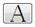
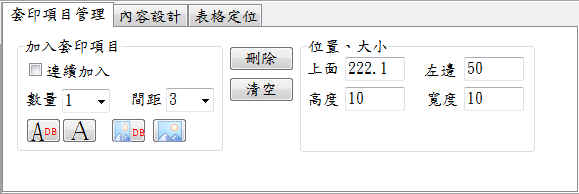

套印內容設定–套印項目管理
可由這裏增減套印項目，套印項目泛指要印於表格上面的字串或圖檔。套印項目可分為可改變內容及不可改變內容等2種類型。
要加套印項目時，請先依需要點右列 其中一項類型後，再於用滑鼠於
表格圖檔上面適當位置用滑鼠點擊即可加入套印項目。

套印項目管理工作頁
1.連續加入：打勾後，再選擇套印類型，就能在表格底圖上面，無限制的加入套印項目，但
這種方式加入的套印項目互為獨立沒有群組關係。
2.數量：一次加入多個同類型的套印項目，這些項目也會自動成群組關係;例如銀行帳號有14
碼，您就可以一次加入14個字串以供套印帳號使用。
3.間距：
(1)與「數量」配合使用，若數值太小，所有套印項目可能會重疊在一起。
(2)單位是mm，1公分等於10 mm。
4.刪除：先點選某個套印項目，再按下刪除，即可以刪除該套印項目。
5.清空：清空所有的套印項目。
6.套印類型
(1)資料型字串：可以動態改變其內容，例如支票收票人名稱，此類型的字串通常會於
套印後進行存檔備查。項目名稱以「QRDBTEXT」進行編碼。
(2)一般字串：用於固定不變的字串，例如「禁止背書轉讓」。項目名稱以「QRLABEL」
進行編碼。
(3)資料圖檔：可以動態改變其內容，例如列印員工識別證時，每個人的相片圴不相同。
項目名稱以「QRDBImage」進行編碼。
(4)一般圖檔：用於固定不變的圖檔內容，例如「平行線」、商標。項目名稱以
「QRImage」為碼。
7.位置：可以用輸入數值的方式調整套印項目的位置，例如上面、左邊，如果要用滑鼠托曳
位置，「用滑鼠調整大小」必需打勾。
8.大小：可以用輸入數值的方式調整套印項目的大小(如寬度、高度)或尺寸(如寬度或高度。
9.印表機：
(1)一般表格套印時，只會用1台印表機，此時只要使用第一台(預設值)即可。
(2)為了節省成本或是特殊套印，您可使用2台印表機執行套印工作，例如一台套印MICR
字串，一台套印彩色圖案。